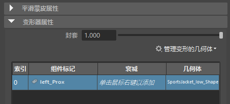
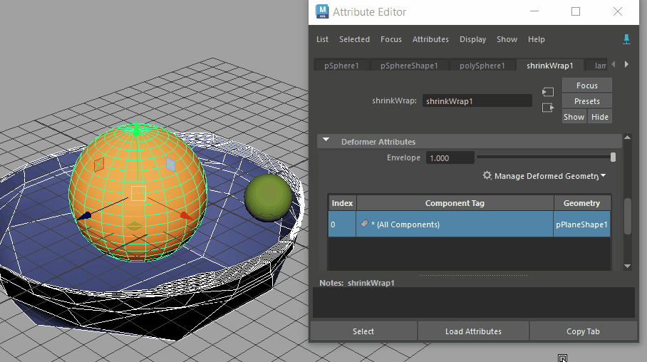
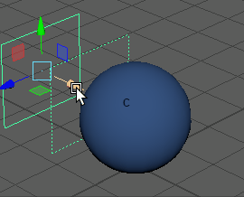

只要将变形器添加到几何体中，“属性编辑器”(Attribute Editor)的“变形器”(Deformer)选项卡中就会显示“变形器属性”(Deformer Attributes)构件，使您可以使用新几何体或衰减来修改或更新变形器。
本主题定义“变形器属性”(Deformer Attributes)构件中的设置，该构件与“属性编辑器”(Attribute Editor)中的“变形”(Deformation)构件不同，后者显示的是附加到形状上的变形器列表。
针对特定变形器打开“变形器属性”(Deformer Attributes)
- 在已指定变形器的几何体上，单击属性编辑器(Attribute Editor)中的“<变形器类型>”选项卡（例如 shrinkWrap1）
注： 如果“变形器属性”(Deformer Attributes)区域灰显，则选定变形器不支持衰减。
有关为变形创建衰减效果的信息，请参见创建变形器衰减。

“变形器属性”(Deformer Attributes)部分
在此表上单击鼠标右键以显示用于编辑变形器衰减的选项。请参见本主题中的“‘变形器属性’(Deformer Attributes)快捷菜单”部分。
- 封套(Envelope)
- 指定变形比例因子。值可以从 0 到 1。默认值为 1。
- 管理变形的几何体(Manage Deformed Geometry)
-

向现有变形中添加新几何体
使用“管理变形的几何体”(Manage Deformed Geometry)菜单添加或移除作为变形驱动者的选定几何体。
此菜单仅出现在属性编辑器中使用驱动者影响变形的变形器的“变形器属性”(Deformer Attributes)部分。
-
注： 为了选择要添加的新几何体，请使用固定功能锁定选项卡 。
“组件标记”(Component Tags)属性以表格格式显示：
- “变形器属性”(Deformer Attributes)表
- 可使用此表修改衰减效果。在此表中的任意位置单击鼠标右键，然后选择“列可见性”(Column Visibility)以在“输入属性”(Input Attributes)表中显示或隐藏列。
-
- 索引(Index)
- 数组中的衰减索引（放置）。
- 组件标记(Component Tag)
- 要变形的几何体的组件标记表达式。
- 衰减(Falloff)
- 要融合的变形器衰减效果的名称。
- 有五种衰减类型，每种类型都有其自己的设置。单击下表中相关衰减属性的链接可查看特定信息：
- 几何体(Geometry)
- 应用变形器衰减的几何体的名称。

GPU
- 块 GPU(Block GPU)
- 激活此选项可将变形器视为非 GPU 变形器。如果您不希望某个变形器或网格使用 GPU，例如，出于内存和调试方面的考虑，或者如果节点的 GPU 版本存在错误或差异，则此选项非常有用。
“变形器属性”(Deformer Attributes)上下文菜单
在“变形器属性”(Deformer Attributes)表中单击鼠标右键以显示一个菜单，其中包含用于添加、编辑或转化变形器衰减效果的选项。
| 选项 | 功能 |
|---|---|
| 选择组件(Select Components) | 亮显标记了组件的几何体。 |
| 选择衰减(Select Falloff) | 切换到属性编辑器(Attribute Editor)中的关联衰减选项卡，您可以在其中修改与选定衰减相关的设置。 |
| 指定...衰减(Assign...falloff) | 创建“基本体”(Primitive)、“均匀”(Uniform)、“接近度”(Proximity)、“子集”(Subset)、“融合”(Blend)、“组件”(Component)或“传递”(Transfer)变形器衰减。有关详细信息，请参见创建变形器衰减。 |
| 断开衰减(Disconnect Falloff) | 使用衰减节点切断连接，但不删除它们。 |
| 删除衰减(Delete Falloff) | 移除衰减。 |
| 绘制组件衰减(Paint Component Falloff) | 仅适用于组件衰减。请参见创建变形器衰减主题中的“组件衰减：绘制变形器权重”。 |
| 移除输入(Remove Input) | 清除来自衰减节点的任何输入连接。 |
| 转化为组件标记(Convert to Component Tags) | 将选择项转化为组件标记。 |
| 权重可视化(Weights Visualization) | 使用颜色渐变设置将衰减权重显示切换为颜色渐变。有关详细信息，请参见可视化变形器权重。

|
| 列可见性(Column Visibility) | 显示或隐藏列中的元素。 |